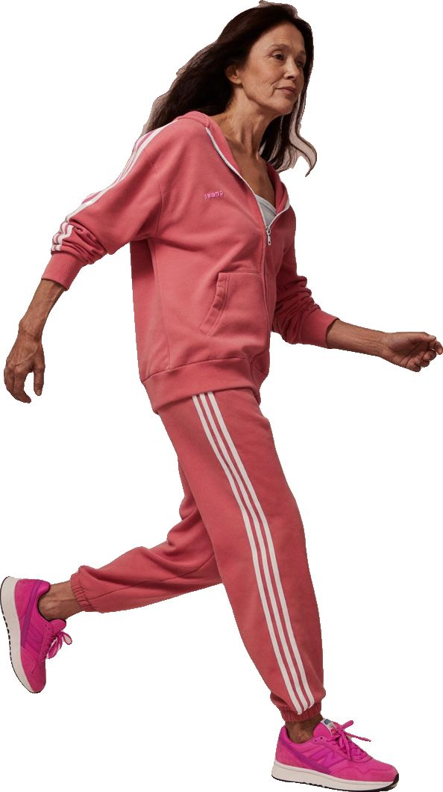
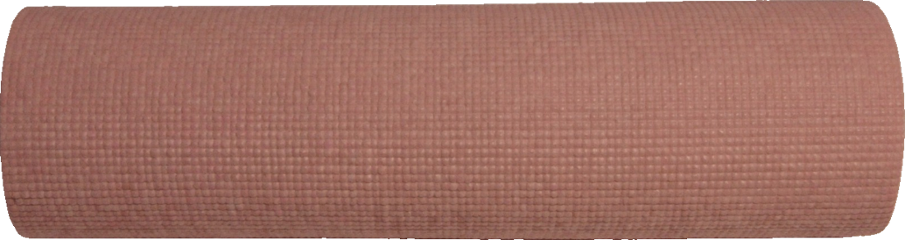

Menopausia EquilibradaSección 03
03
muévete

Sección 3
Ejercicio y movimiento
Moverte no es castigarte por lo que comiste. Es la forma más directa de cuidar tus huesos, tu corazón, tu ánimo y tu energía.
150–300
minutos a la semana de actividad moderada.
2+ días
de fuerza para los grandes grupos musculares.
OMS, recomendaciones de actividad física para adultos.
En esta sección
Fuerza para huesos y músculo17
Cardio, equilibrio y movimiento diario18
~7%
de las mujeres en la perimenopausia cumple las recomendaciones de actividad física. Si te cuesta, estás en buena compañía: empieza con 10 minutos.
American Heart Association, declaración científica, 2020 (resumen ACC).
03 · Ejercicio y movimiento16
